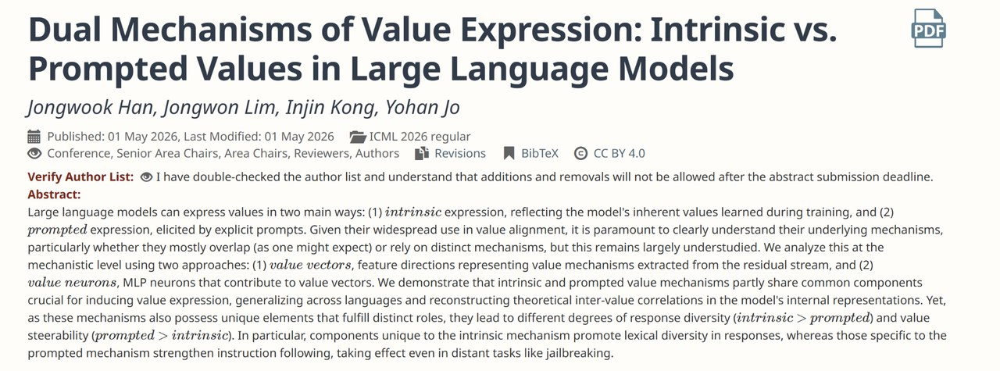

01
How should we evaluate long-form LLM outputs?
I am interested in scalable factuality and hallucination evaluation, especially for domain-specific long-form generation where simple multiple-choice benchmarks are insufficient.
Ph.D. Student · Data Science · NLP
I am a Ph.D. student at the Graduate School of Data Science, Seoul National University, working on natural language processing and large language models. My current interests include LLM evaluation, hallucination, linguistic capability evaluation, value alignment, and educational dialogue systems.
Research
My work sits at the intersection of computational linguistics, reliable LLM evaluation, and model behavior analysis.
I am interested in scalable factuality and hallucination evaluation, especially for domain-specific long-form generation where simple multiple-choice benchmarks are insufficient.
I study how to design targeted benchmarks for morphology and other linguistic phenomena, with attention to leakage, distribution shift, and language-specific structure.
Recent work examines whether intrinsic model behavior and explicitly prompted behavior rely on overlapping or distinct mechanisms in internal representations.
Selected publications

We study whether values expressed by language models through inherent behavioral tendencies and explicit prompting share the same mechanisms. The analysis uses value vectors and value neurons to compare shared and mechanism-specific components.
Experience
Project: Benchmark Dataset to Evaluate the Morphological Capabilities of Large Language Models.
Project: An Effective Multi-turn Dialogue Framework for LLM-based Tutoring.
Built ensemble systems for detecting AI-generated text under the team name JongwonLim.
Created instruction-tuning datasets for Korean large language models.
Project: Synthesizing Hate Speech Data Using Large Language Models.
Education
Ph.D. in Data Science
Graduate School of Data Science
B.A. in Linguistics and Data Science for Humanities
Awards & leadership
SNU Linguistics Department · 2024
Led academic discussions and presented research across syntax, phonology, and semantics.
Survey Analyst Certificate, Level 2 · Advanced Data Analytics Semi-Professional Certificate
Skills
Tools I use for model training, evaluation, data analysis, and research prototyping.
Python · R · Django · Git
PyTorch · language model training and evaluation · retrieval-augmented generation
NumPy · Pandas · Matplotlib · statistical analysis
Research in Computational Linguistics 2 · Computational Linguistics · Conversational AI · Bayesian Statistics
Contact
I am open to research conversations on LLM evaluation, linguistic benchmarking, hallucination, and alignment-related model behavior analysis.